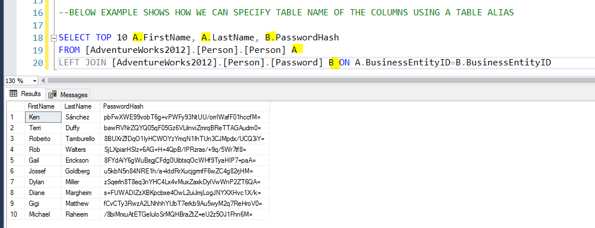

SQL Alias
Alias= An assumed Name or Identity
A lot of times we need to change the Column Name or table Name temporarily , this is where we can use Alias
This is very useful while joining multiple tables in RDBMS
Column Name Alias
Table/View Name Alias
Column Name - Alias
SENARIO- Your company asked you to give a report , with Person details. But they wanted to rename FirstName as FNAME , LastName as LNAME. You can do the below query.
Here we can see three ways of creating a Alias Name
1) Use 'AS' and rename it.
2) Simply rename it with a space in between.
3) Use '=' sign, but note that the Alias name should come first in this case.
Table/View Name - Alias
Alias for Table / View names are very helpful when we join two or more tables/ views.This helps us specify the column is in which table easily.
In the below example notic how we name one table A another table B and use it before column Names
